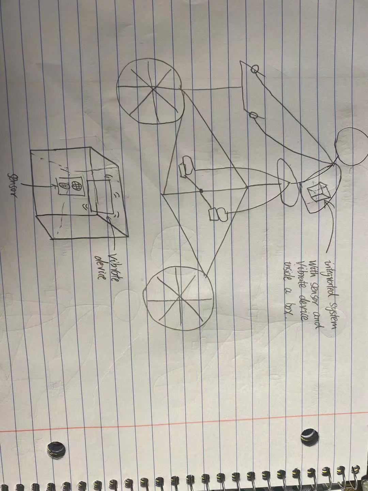
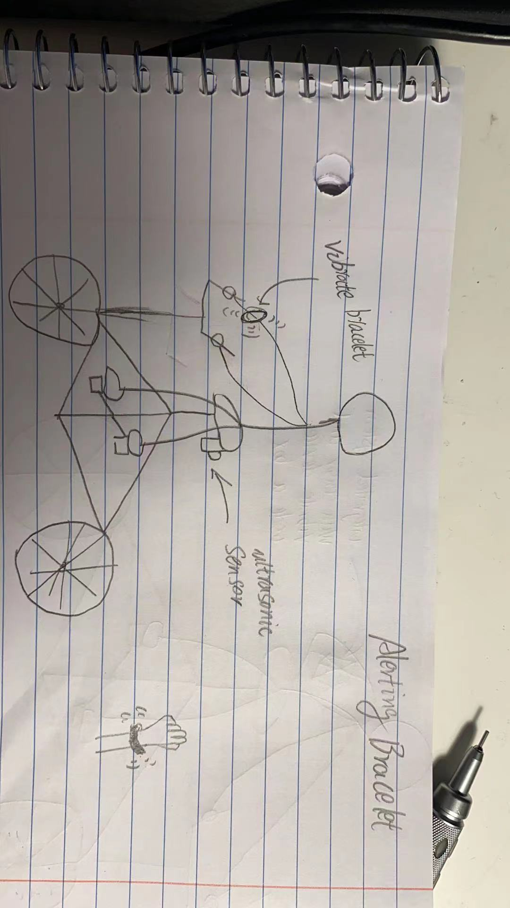
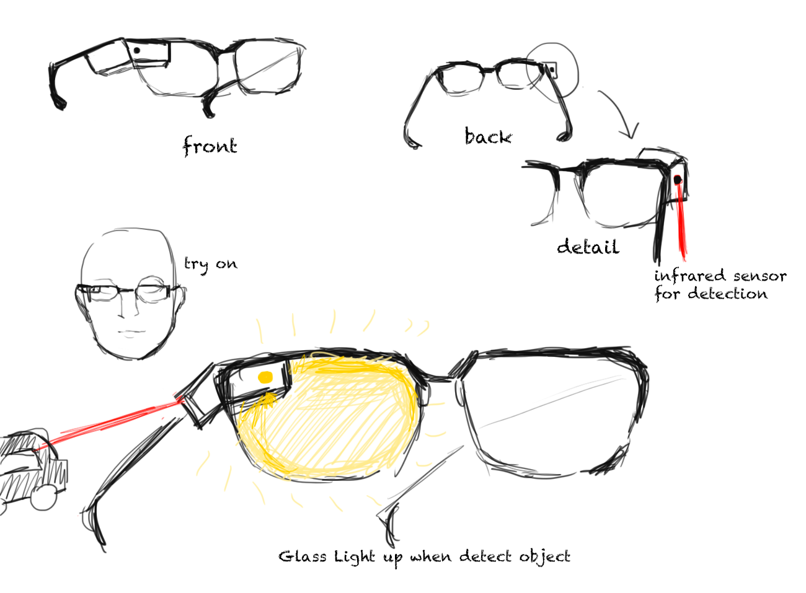
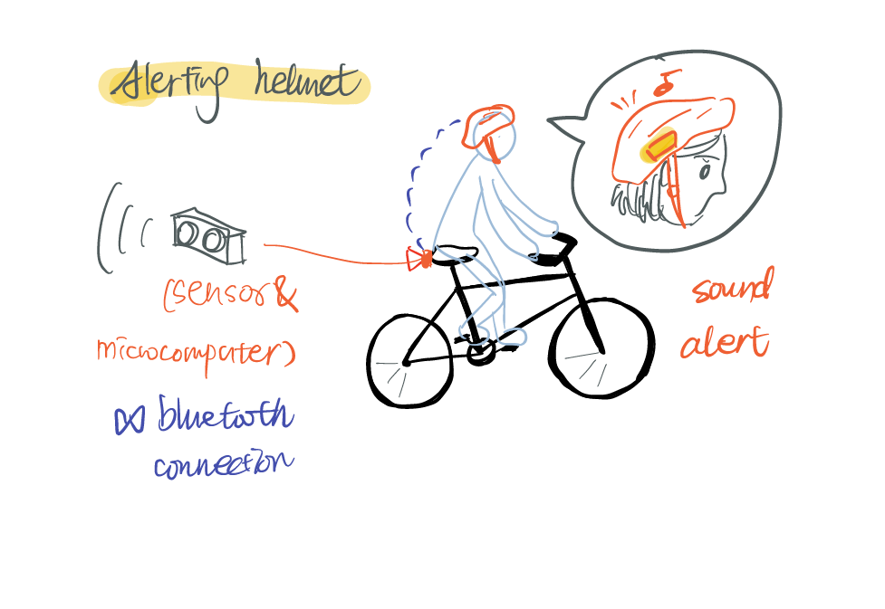
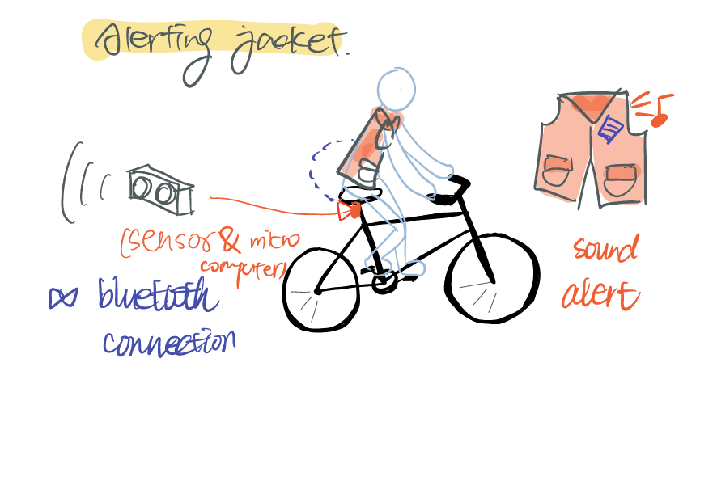
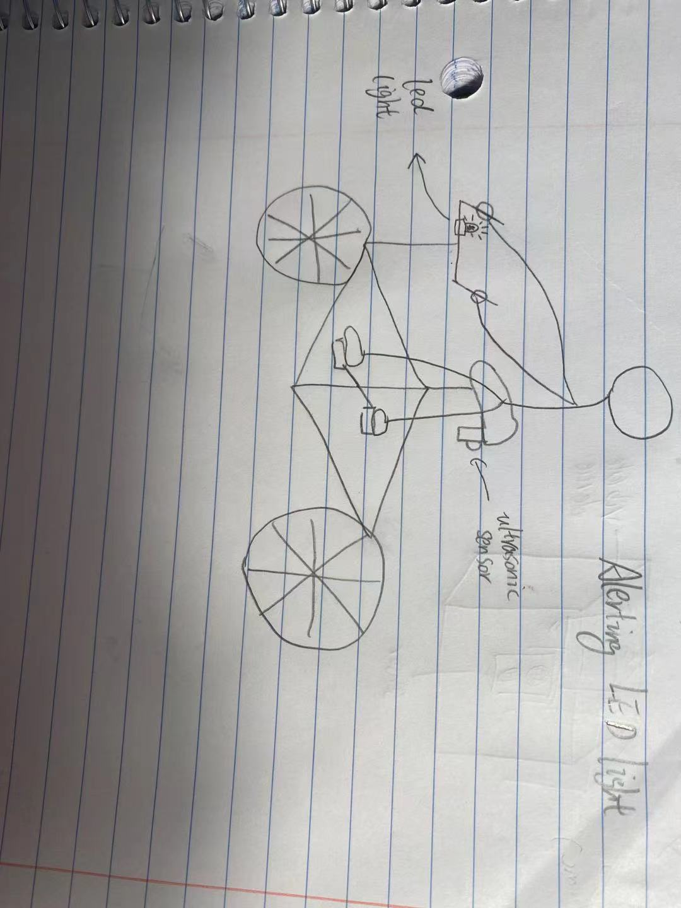
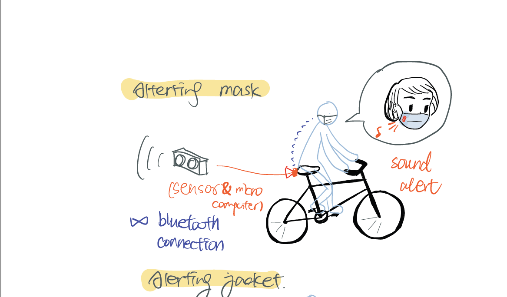
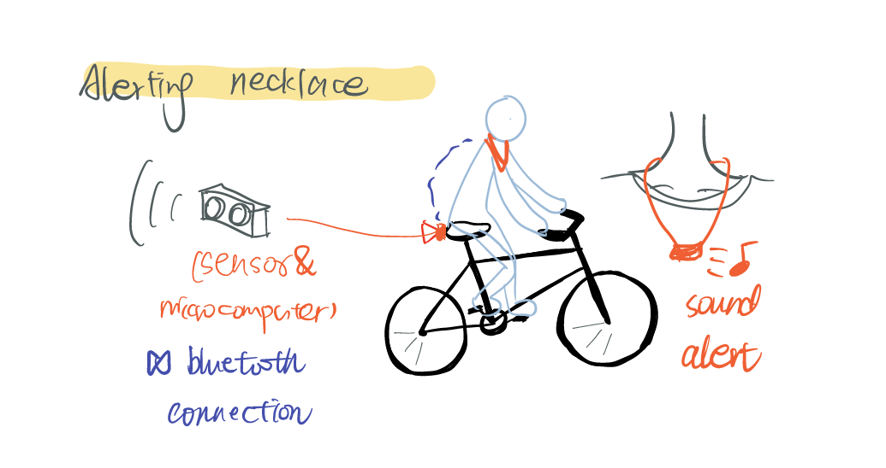
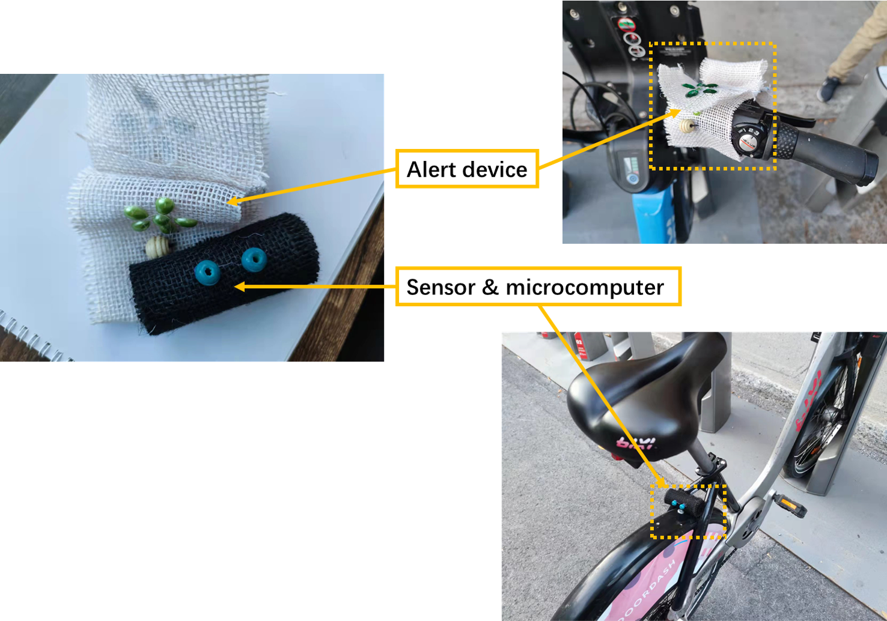
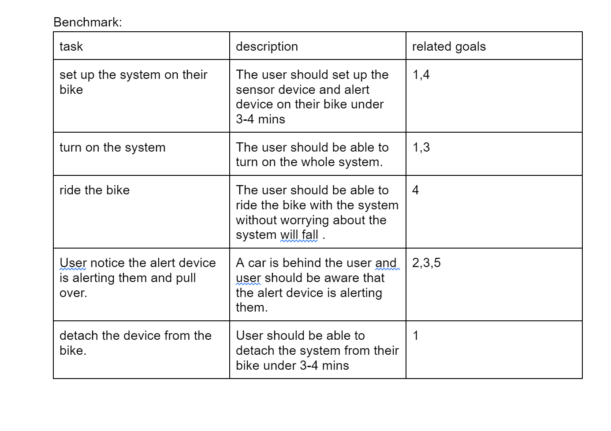

1. Design Concept
Sketch
We used 10-plus-10 methods to start our low-fidelity prototype, and we brainstormed 10 different ways of achieving “detecting objects from the back and remind users“ by quick sketches. The following are our sketches. Idea generation process:
 idea1 idea2
 idea3 idea4
 idea5 idea6
 idea7 idea8


idea9 idea10
During the reduction and picking the most promising design concept, we had decided to kept the idea 10,8,3 and proceeded to build the low fid prototype.
2. Prototype
LED+sound alert
The prototype consists of 2 parts: the sensor with microcomputer and the alert device installed on the bike handle. While the user is riding the bike, the sensor will detect barriers backwards and send the data to the microcomputer to calculate the movement speed. If there is some object moving quickly towards the bike in the back it will blink in a fast frequency and send an alerting sound. Users can turn off the detection mode when they don’t want the function to work, and can turn back the function by pressing the single button under the LED light.
Vibration bracelet
This system is consist of two part, one is the sensor with a microcomputer and the other one is the bracelet. Sensor: This sensor will be attached under the seat of the bike to detect if there are any cars approaching the bike from behind at a fast speed.


Brecelet: When the sensor detects there is a moving car approaching the bike from behind, it will send the message to the microcomputer and the microcomputer will signal the bracelet to the vibraret in an amount of time to alert the user.

vibrating phone
This system consists of two parts: one is the cellphone and the other one is the sensor. Sensor:This sensor will be attached under the seat of the bike to detect if there are any cars approaching the bike from behind at a fast speed.

Cellphone: The cellphone will allow the user to adjust the distance of detection and the strength of the vibration and the cellphone will connect to the sensor via bluetooth and process the messages that send by the sensors and vibrate when there are any cars approaching the bike in a fast speed from behind.

3. Usability goal + Benchmark
Goals
- A new user should be able to figure out how to set up the system on their bike in under 3-4minutes. rational: The situation that the user is going to use our system is when they are going to ride a bicycle and ready to go in any time. So an easy set up system should be implemented since we do not want our users to spend a lot of time just for setting up the hardware on the road.
- The method to prompt the user should be effective enough to alert the user and let them know there is a car approaching them behind. rational: The whole point for the system is trying to alert the user when there is a car approaching them behind so it is the most important part that our system’s method of prompting should allow the user to be aware that there is a car behind them.
- The system should be easy to use.rational: when the user is using our device on the road we do not want to have some complicated functions since that could potentially cause some safety hazard.
- The system should be safe to use. rational: when the user sets up the device on their bike, the device should stay on the bike all the time and minimize the risk that the device will fall off the bike and cause some safety issues.
- Users should feel safe and confident when using the system. rational: The system should successfully detect that there is an actual car behind the user and the accuracy is vital since any false alarm or miss alarm could cause an accident.
Benchmark
4. Test Material
Observer briefing:
Welcome to the system testing of Group 9, thank you for participating in our usability study. Your feedback and observation is important to us, it definitely will help us improve the design of our system in the future.
The task for today is to observe and evaluate the user's interaction of 3 different paper low-fidelity prototypes, and you are going to go through the whole process with our development team.
The test will last around 20-25 minutes. Before the session, as an observer, you will be doing: Ask the Participant to sign the Consent Form Read aloud the User Introduction to the Participant Ask the Participant to fill out the pre-test Questionnaires
And during the session, you will be doing: Give the instruction at appropriate time to participates Avoid express opinion to the users Give hints when users have difficulty figuring out the operations. Observe participates and take notes
If you have any questions, feel free to ask any question to the development team. Thank you again for your time and contribution!
User Introduction:
Thank you for joining our usability test, our team is currently developing a new system called “Bicycle safety assistant”, which helps users to detect the vehicles from the back. And today we are inviting you to use our system, give us feedback to help us evaluate and improve our system in the future.
You will be given a paper format prototype, and you need to follow the test tasks we provided to do corresponding operations. Our observer and development team members will stay with you all the time. The whole process will take approximately 25 minutes.
If you have any questions, feel free to ask us.
There are no right or wrong questions, so please don’t be afraid to show your confusion and please give us honest feedback on the things you like or dislike.
User documentation:
prototype 1:
Seonsor : place the sensor under the seat of the bike with the snap on the sensor. There is a button on the sensor you could press to turn on or turn off the sensor. Place the sensor with the message receptor facing behind the bike. The sensor could detect if there are any cars behind the bike and send the message to the external processor to process the messages. Bracelet: Wear the bracelet on your arm, the snap could adjust the tightness of the bracelet. There is a button on the bracelet to turn on or off the device. The bracelet will vibrate when the sensor detects there is a car behind the bike.
prototype 2:
The prototype consists of 2 parts: the sensor with microcomputer and the alert device installed on the bike handle. Before you ride your bike, place the sensor on the back of your seat to detect the object behind. Start your device and it will automatically connect with the microcomputer through bluetooth. During your riding, when there is some object moving quickly towards the you in the back, the alert device will blink at a fast frequency and output alerting sound. You can turn off the alertion mode when you don’t want the function to work by pressing the single button under the LED light, and you can turn back the function by pressing the same button.
prototype 3:
Sensor is connected with an App on the phone. You can adjust values on the App to control the “vibration volume” and the distance you want the sensor to detect and vibrate. When you turn on the sensor with an on/ off button, open the App, and customize your expected value. The App default value is 2m and 50% vibration. You can change these values on the App main screen. There are two sliding buttons, the top one is for distance; and the bottom one is for volume. The value that shows on the far right is the current value you have. After every time you adjust the volume, the phone will vibrate directly to give feedback on the current vibration strength. The sensor automatically detects objects when you turn the sensor on, and connect with the sensor's bluetooth by hand. When you ride on your bike and any vehicle approaching from the back, you can enjoy the vibration reminder from the phone with the expected effect you want.
Pre-test questionaire:
Test Task:
prototype 1: vibration bracelet
- set up the sensor.
- turn on the sensor.
- set up the vibration bracelet.
- turn on the bracelet.
- ride the bike.
- pull over when you notice the bracelet is vibrating.
- turn off the sensor.
- detach the sensor from the bike.
- turn off the bracelet.
- detach the bracelet from your arm.
prototype 2: LED light+Audio
- Fix the sensor in the correct location.
- Wear the alert device.
- Connect bluetooth.
- Notice the alert while riding the bike.
- React to the alert( such as looking behind to find what's happening).
- Turn off the alert function when knowing it's safe behind/ in some places you don't want it to light.
- Restart the alert function after you close it.
Prototype 3: vibration phone
- turn on the sensor
- connect the bluetooth from sensor
- open the App
- change “distance detection to vibrate” to 1m
- change “vibration volume” to 30%
- ride the bike
- pull over when you notice the phone is vibrating
- change “distance detection to vibrate” to 3m
- change “vibration volume” to 90%
- feel the difference between two adjustment
- close the App
- turn off the sensor
Test script:
Team: Thank you for participating in the usability testing of our prototypes. During the process, you will be testing for 3 different prototypes about object detection devices on the bike and the process will be recorded for further research. Before we begin the testing, would you mind take a few minutes to do a small pre test questionnaire? evaluator: *do the questionnaire. Team: Perfect. Thank you very much. Before we start any testing do you have any question? evaluator: *ask questions Team: answer. Perfect! Now, let’s start the testing. You will be given a number of tasks to complete by using the prototypes during the testing and feel free to ask any questions if you need any help. Team: Your first task will be to set up the sensor device on the bike. evaluator: *should successfully set up the device Team: Please turn on the sensor device. evaluator: *should successfully turn on the device Team: Now, please set up the alert device. evaluator:*should successfully set up the device Team: Please turn on the alert device. evaluator: *should successfully turn on the device Team: Please ride the bike with the devices. evaluator:*should successfully ride the bike with the device Team: Now, we will simulate a car approaching you behind and you should notice the alert device is prompting you with the help from our team members. evaluator: *should successfully notice the alert device is prompting and pull over. Team: Please stop the bike and close the sensor device. evaluator: *should successfully close the device. Team: Please detach the sensor device from the bike. evaluator: *should successfully detach the device. Team: Please close the alert device. evaluator: *should successfully close the device. Team: Please detach the alert device. evaluator: *should successfully detach the device. The process will be repeated 2 more times for different prototypes. Team: Now that you have finish all the testing, please take a few minutes to finish this post-test questionnaire. evaluator: *should successfully finish the questionnaire. Team:Thank you so much for participating in our usability test! Have a nice day!